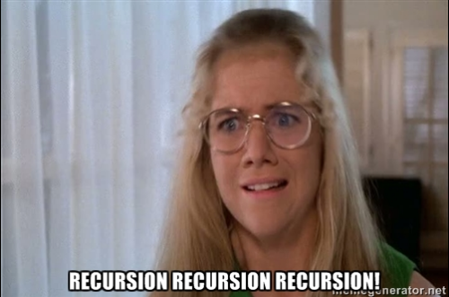

Recursion...
By far, the worst of times and the best of times this week when learning a bit about recursion was when I came across the notion that one can only really learn recursion when one begins to actually think recursively. Well, crap. That's not helping.
Of course, if you don't know, recursion is the term often thrown about to describe recursive functions-- or, functions that for part of their evaluation, call themselves (yes, from inside the function body).
Before we go any further, lets just be brutally honest about two things. One, this post will not make you a recursion master. Two, recursion should be understood well enough so you can read and write them with some basic utility, and then it's time to move on. Recursion is generally slower than iterative functions (you know, 'for' loops), and appears to be a favorite topic of both interviewers and professors and, well... no one else.
Because of the fact that one almost certainly understand iterative functions if they're able to craft recursive ones, teaching or testing recursive functions implies knowledge of the former... get it? But, in a casual survey on the phone to my older brother this evening, his wife grabbed the phone (she works web dev at the largest bank in the world) and said she'd get fired if she used recursion, or, at least, her code would never pass code review [author's emphasis on job tenuousness]. My brother nodded along, "yeah, I'll take a for loop any day".
OK, lets do it. A recursive algo usually/maybe/mostly has three parts: 1) the function call, and since I think mostly in Ruby, lets say a method call and its arguments; 2) the base case (wtf? be patient, we'll get to that); and, 3) the nested method call with different arguments... wait... DIFFERENT ARGUMENTS. OK?
def resursive_example(n)
if n == 1
foo
else recursive_example(n-1) + recursive_example(n-2)
bar
end
end
Get it? Probably not, let's do two more things-- a quick look at base case and then, a note about stack tracing and tacit memory use.
OK, base case. This is the first thing you want to latch your little brain-sucking thoughts on to when trying to write a recursive method or function... what's the smallest or last piece of the puzzle? In a factorial recursion, it's obviously when you multiply by one in the last (ahem, base) case. So, you go and write that part in some separate way, just like I've done with the IF component above-- the flow is contolled. And, then, think about the next case, like how you might represent multiplying by two in f(x)= 2!, the function (method) that solves 2 factorial. I won't solve it here, that's not my point.
Why not? Because there's one more important note. Once you figure out your non-base case, you know, the recursive part, you can really only do that if you trust/know/understand how the computer is going to handle storing, sorting, stacking, looping or WHATEVER it does with all the parts of your ginormous problem that you're going to throw at the method call, like factorial_recursive_function!(563), which brings us to stack tracing. It's not visibly written in your code what's going on-- as in, where exactly is all of that looping going to happen??? You just need to understand how it works!
So, what does happen when your beautifully copy/pasted factorial recursive function takes the argument 3, to solve 3!??? Well, it will check for the base case, see the argument is not the base, keep moving down, make a note that it will have to call the recursive function with 3 as the arg., but not evalutate it, keep moving down, make a note to call the recursive function with 2 as the arg (but not evaluate), keep moving, see that the next subtracted arg is now equal to the base case, and, THEN, trace back up through the stack of calls and solve each one, working its way back up through the recursive nightmare of scribbled and nested memory allocation on the stack, hoping and praying for no... stackoverflow.
That's recursion.